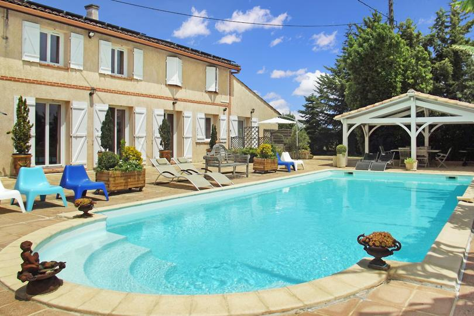

Accueil›Gîte avec piscine
Gîte avec piscine près de Toulouse
Location de vacances avec piscine plein sud et grand parc, à 20 minutes de Toulouse, au calme du Sud-Toulousain.
Vous cherchez un gîte avec piscine près de Toulouse ? Au Domaine des Six, à Lherm (Haute-Garonne), le grand T3 Libération ouvre directement sur une piscine extérieure plein sud de 13 × 5 m et un parc arboré de 4 600 m². Une bastide de plus de 300 ans, des oliviers, des arbres fruitiers et la vue sur les Pyrénées : un cadre paisible pour des vacances nature, à seulement 20 minutes au sud de Toulouse.
Libération, notre grand T3 avec accès à la piscine
Libération est un grand T3 de plain-pied de 51 m², pensé pour recevoir jusqu'à 4 personnes dans ses deux chambres. C'est le plus spacieux des cinq logements du domaine, idéal pour profiter du séjour sans contrainte. Depuis le logement, vous accédez librement au parc clos arboré ; la piscine plein sud et ses plages solarium sont quant à elles disponibles en option, sur réservation. Après une journée de visites, on enchaîne sieste à l'ombre des oliviers et apéritif au calme, sans avoir à reprendre la voiture. Loué en toute autonomie, façon gîte, il associe l'indépendance d'une location au confort des grands espaces en plein air.
Pour qui
Libération convient particulièrement aux familles et aux couples qui aiment l'espace, ainsi qu'aux séjours prolongés : sa cuisine équipée et ses deux chambres en font une vraie base de vie pour une semaine ou plus. Et si vous venez à plusieurs foyers, le domaine compte cinq logements indépendants pour jusqu'à 15 personnes au total — un autre grand T3 (Amazone), deux studios (Ora, Sens) et une love room (Désir) viennent le compléter. Chacun garde son intimité tout en partageant le parc et les grandes tablées, la piscine restant accessible en option, sur réservation. C'est la formule idéale pour réunir une famille élargie ou un groupe d'amis près de Toulouse.
Le parc et les équipements
Le parc clos de 4 600 m² est planté d'oliviers et d'arbres fruitiers, pour des journées au calme et à l'abri des regards. Au centre, la piscine extérieure plein sud de 13 × 5 m profite du soleil toute la journée, avec ses plages solarium pour bronzer ou lire. Autour, plusieurs espaces ponctuent le jardin : un pool house au bord du bassin, un kiosque en cèdre ombragé, une paillote conviviale. Le domaine propose aussi le wifi, un parking privé et accepte les animaux. La bastide centenaire et la vue dégagée sur les Pyrénées achèvent de planter le décor d'un séjour au vert.
Tarifs & réservation
Libération est proposé dès 110 €/nuit en basse saison ; les tarifs évoluent selon la période, la durée et le nombre de voyageurs. La réservation se confirme avec un acompte de 30 % et une confirmation écrite, le solde étant réglé à l'arrivée. Côté pratique : arrivée à partir de 16 h, départ avant 11 h. Le domaine se situe à Lherm (31600), à 20 minutes au sud de Toulouse, à 11 km de Muret et à proximité de l'A64, avec parking privé sur place. Le Domaine des Six ouvre à la mi-janvier 2027 et les pré-réservations sont d'ores et déjà ouvertes. Pour découvrir le gîte en détail, ses photos et sa grille saisonnière, consultez la page dédiée : Libération.
Options sur réservation : piscine 5 €/personne la demi-journée, 10 €/personne la journée. Le parc arboré reste en accès libre.
Questions fréquentes
Le gîte donne-t-il accès à la piscine ?
Combien de personnes dans le gîte ?
La piscine est-elle privative ?
Quand le gîte est-il disponible ?
Quel est le tarif du gîte ?
À découvrir aussi
Nos logements
Ouverture mi-janvier 2027
Réservez votre séjour
Dites-nous vos dates : nous vous répondons personnellement.
Demander mes datesTéléphone 06 98 20 02 08 · francois.leterrier.cmw@gmail.com